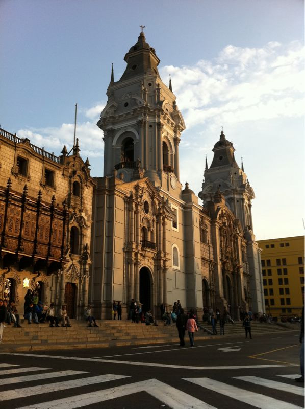

Thu, 14 Oct 2010 05:54:13 · Peru · Lima · cathedral · iglesia · city · scene · travel · photography
view of the basilica cathedral of lima peru

View of the Basilica Cathedral of Lima, Peru.
Built in 1535, this cathedral contains the tomb of the Spanish conquistador of Peru, Francisco Pizzaro.